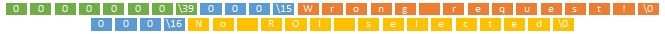

TBV Network Access
Document version: 1.7
Author(s): Michael Luhrs
Date: Juli 2015
Introduction
The network interface opens custom access to data that is internally
used by Turbo-BrainVoyager (TBV) during and after real-time processing
including information of ROI, design matrix, (pre-processed) raw data
and statistical information inclusive the content of the design matrix,
beta maps and contrast t-maps. This plugin allows to perform additional
operations and calculations outside the TBV.
Well defined access queries
are used to get access to the data via a TCP connection. Therefore a
server implementation allows to get access to the whole data that is
also provided by the plugin interface during and after the real-time
processing.
A server client approach is used to get access to the data
at any time. Therefore the server provides all features to get access to
the data in real-time while running the analysis.
Send a data specific
query to get the requested information from the server.
Connect to the server
A connection to the server could be established through a TCP socket
implementation. At first the specific server port has to be defined in
the plugin. After that the IP of the server will be displayed in the
plugin window. The ports range from 1 to 65535 but the first 1024
well-known ports or system ports are used by system processes and need
superuser privileges on Unix-like systems to bind a network socket to
it. Be sure to use a TCP socket to connect the server.
The plugin uses
two different sockets. One to receive and answer the queries from the
client and one to send execution information from the TBV. To specify
the socket to use send a ("Request Socket") char array for the query
socket or a ("Execute Socket") char array for the execution information
socket (prepend the size of the array as a 4 byte unsigned integer for
all char arrays and end the array with a NUL [\0]). Include the specific
char array into a byte array and insert as the first element the size of
the byte array as an 8 byte signed 64bit integer. An example byte based
representation is shown below:
If the request is wrong the connection will be closed. Insert a short
delay from around 0.5 seconds between the different socket connection
requests to be ensure that the server is listening for a new connection.
After the connection is completely established the data can be directly
accessed from TBV. Only ask for data that is already available in TBV,
otherwise an error message will be returned!
All data that is send and
received is in big-endian (network byte) byte order.
Access the data
A query with the included request of the specific data must be send
to the server to access the data from the TBV.
A query has to be constructed as a byte
array where the first element is a definition of the size of the byte
array as an 8 byte signed 64bit integer.
The second entry defines the
type of query as a char array. After that follows the specific query
definitions, for example the time point from which to get the data. Only
ask for data that are already available in the TBV otherwise an error
string ("Wrong request!") will be returned.

If the query consists of more than one parameter, attach the other
parameters to the query and store it in the byte array.
You will receive a byte array with the respective content as answer.
(The first 8 byte of the byte array represents the size of the received
byte array as unsigned 64bit integer.) As an example how a definition of
the byte array should look like, see the
tGetCurrentTimePoint function (send and receive).
Prestep, Poststep, Postrun calls
Whenever new data is available a specific information will be send to the client. The calls are distinguished into a Prestep, Poststep and a Postrun call. The Prestep call will be send whenever new raw data is available. The Poststep call will be send whenever new pre-processed data is available. The Postrun call will be send when the experiment is completely finished or interrupted by the user. This invocation consists of an at least 14 byte large char array followed by an integer representing the current point in time of the current TBV processing. Both data will be send as a byte array (The first 8 byte of the byte array represents the size of the received byte array as signed 64bit integer)
Wrong requests
Whenever the user sends a wrong query (for example asked for a time point that has not been processed yet) a wrong request information will be send to the client. The first part of the information is the definition that a wrong request was asked. After that follows the description which specific part of the query is wrong. The client receives a 14 byte char array (‚??Wrong request!‚?ù) followed by an char array including the respective error. Keep in mind that this data will also be send in a byte array. (The first 8 byte of the byte array represents the size of the received byte array as unsigned 64bit integer and before each char array the specific length as a 4byte unsigned integer.)

Available Script Functions
A complete list of all available functions can be found in the doxygen's reference documentation. These are sub-grouped to:
- Basic Project Functions
- Protocol, DM, GLM Functions
- ROI Functions
- Volume Data Access Functions
-
SVM Access Functions
Since version 3.2 TBV provides access to classification output values calculated during real-time SVM classification. The tGetCurrentClassifierOutput() function provides both a single integral value informing which class is predicted at the current time point as well as a detailed vector of float values that can be used for custom classifier-based neurofeedback. The latter information is returned in a vector since the number of values depend on the number of classes used for classification (see below). It is, thus, important to call the tGetNumberOfClasses() function to ensure that the right number of values is used to prepare an array with sufficient size for retrieving the output values. -
Functional Connectivity Functions
The plugin provides basic functional connectivity measure like the Pearson correlation or partial correlation. These measures are based on the selected ROI‚??s and calculated for the current and previous points in time and a specified window for the correlation. The correlation results stored in the double PCorrelation[ncon] array can be accessed as shown in the example below:
The total number of correlations (ncon) can be calculated using the equation below.int n_rois = tGetNrOfROIs(); int ncon = 0; for(int i=1; i<n_rois; i++) { for(int j=i+1; j<=n_rois; j++) { printf(‚??Correlation: ROI %i and ROI %i: %f‚??,i,j,PCorrelation[ncon]); ncon++; } }
int ncon=(n_rois*(n_rois-1))/2; // total number of correlations (edges) - Connection Functions